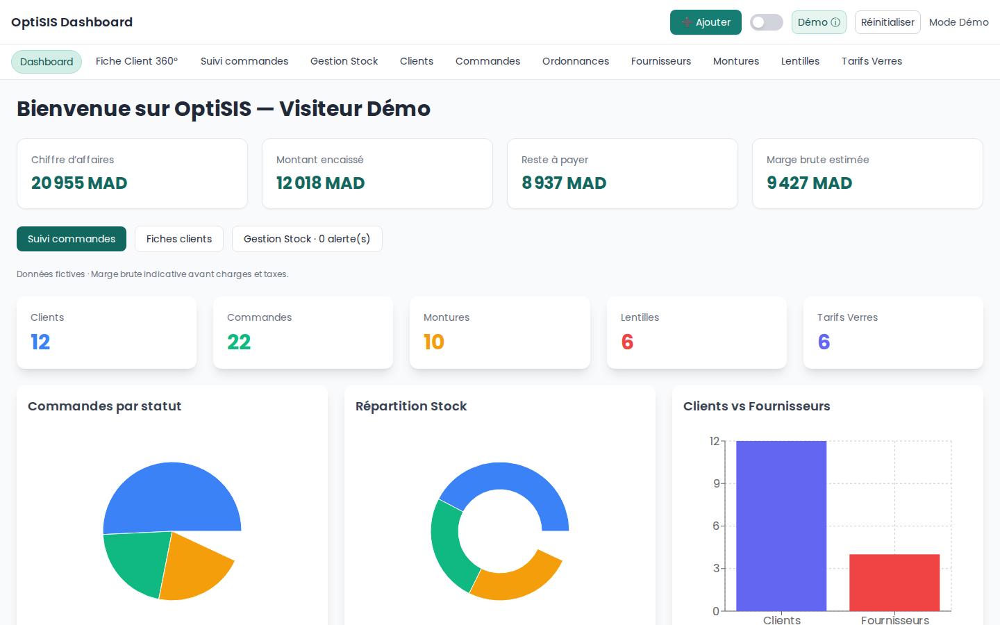

01 · Interface de gestion métier
Faciliter le suivi des informations métier et l’organisation quotidienne d’une activité d’optique.
Projet de gestion d’activité pour un opticien.
Technologies : React · Vite · Firebase

APPLICATION WEBFaciliter le suivi des informations métier et l’organisation quotidienne d’une activité d’optique. Interface d’administration React pour centraliser les tâches et visualiser les données.
Faciliter le suivi des informations métier et l’organisation quotidienne d’une activité d’optique.
Interface d’administration React pour centraliser les tâches et visualiser les données.
Un module intégré dans la présentation du projet.
Projet de démonstration ; les fonctionnalités disponibles peuvent varier selon la version publiée.
Discuter d’un projet similaire →